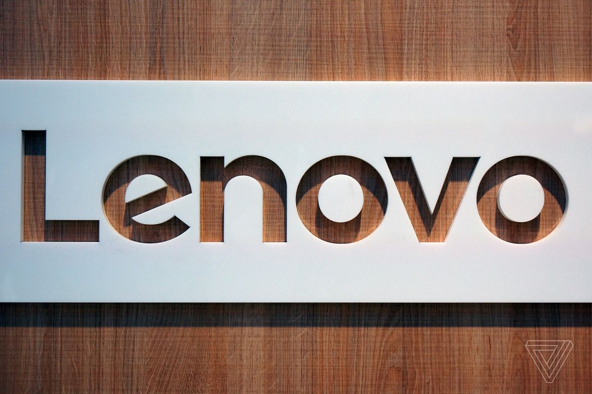

LENOVO STORE

LENOVO
Lenovo is a good computer brand because of their wide selection of laptops on tap. But quality depends on what specific laptop you get, and that goes for any brand: HP, Dell and Asus are all popular brands due to their reliability and price. But every brand has good models and bad ones.
SONY STORE


SONY
Sony Group Corporation (ソニーグループ株式会社, Sonī Gurūpu kabushiki gaisha, /ˈsoʊni/ SOH-nee, commonly known as Sony and stylized as SONY) is a Japanese multinational conglomerate corporation headquartered in Kōnan, Minato, Tokyo.[7] As a major technology company, it operates as one of the world's largest manufacturers of consumer and professional electronic products, the largest video game console company and the largest video game publisher. Through Sony Entertainment Inc, it is one of the largest music companies (largest music publisher & second largest record label) and the third largest film studio, making it one of the most comprehensive media companies, being the largest Japanese media conglomerate by size overtaking the privately held, family-owned Yomiuri Shimbun Holdings, the largest Japanese media conglomerate by revenue
ASUS STORE

ASUS
About Us At Woolworths we take our business values seriously. They aren’t just words in an annual report - they are the foundation of our business. They give us direction and guide our behaviour, actions and choices. In fact, our values are so important to us that we’re measured not only on our performance, but also by how well we live up to them.